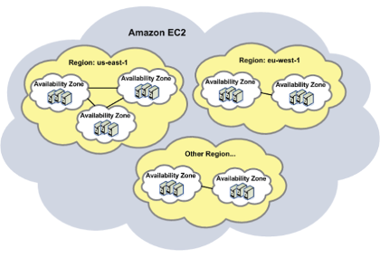
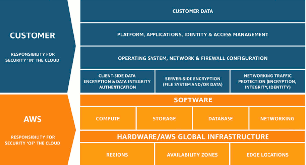

Amazon Web Services
2004 – Launch of SQS
2006 – Launch of AWS
2007 – Launch of EC2 and 108,000 developers signed on
2012 – First Re:Invent Conference
2013 – Introduction of certifications
2020 – Renewable energy to power all AWS data centers worldwide
17 Regions worldwide, each with a minimum of 2 Availability Zones, each AZ with a minimum of 2 data centers. The public regions are listed in the console, then there are private regions that are not listed. A region represents the georgraphical location of where the data will reside.
Availability Zones (AZ) constitute physically seperated areas within a region. Takes a minimum of of two AZ's to make a region.
A Data Center (DC) is the location of the servers, storage devices, network elements, security devices, and other facility infrastructure. Takes two DC's to make an AZ.
A Virtual Private Cloud (VPC) is a logical clusterings of resources within a region that can span multiple AZ's. Within a VPC there are multiple subnets that technicall map to the AZ's within the region. For example, the North Virginia region has 6 AZ's and a default VPC with 6 subnets. You can create new subnets and assign them to be PUBLIC or PRIVATE. The default subnet inside a VPC is publicly accessible.
Amazon acts as a trusted advisor and uses features such as Security Groups, Firewalls, public/private keys, and encryption.

HA and FT: DynamoDB and Route53
HA only: EC2 and S3